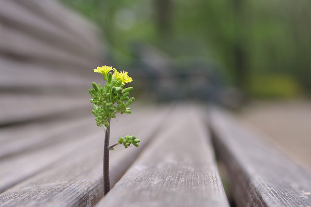

2.3-Enfoque
¿Qué es el enfoque?
El enfoque consiste en resaltar el elemento enfocado (el motivo) frente a todo lo demás que está desenfocado (fondo). Este recurso es muy poderoso a la hora de fijar el centro de interés de la fotografía y todo buen fotógrafo hace uso de él.

¿Qué nos permite enfocar?
El enfoque se puede realizar a través del objetivo. El cual nos permite enfocar a distintas distancias y controlando la apertura del diafragma y el tiempo de exposición del obturador podemos conseguir mayor o menor profundidad de campo en la imagen y también enfoques selectivos.
El primer gran recurso artístico del enfoque total es claro:
El enfoque selectivo no deja de ser una aplicación de una reducida profundidad de campo. En fotografía de paisajes, en general, es preferible una gran profundidad de campo para abarcar todos los detalles con nitidez en todas las zonas de la fotografía. No obstante, para el retrato, la fotografía del detalle y muchas otras ocasiones suele ser preferible una profundidad de campo limitada para que solo aquello que interesa al fotógrafo aparezca nítido.

Actividad
- Busca informacion sobre el objetivo de la camara fotografia y realiza un breve resumen explicando como funciona. Las respuestas se expondran en clases.
Licencia: dominio público